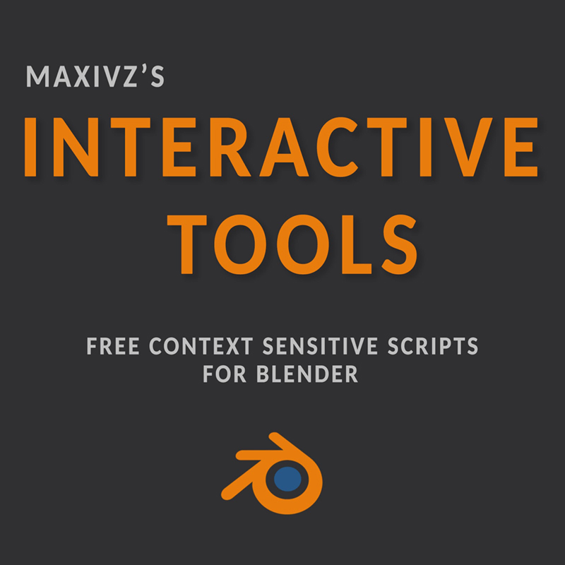

Getting Started

What is Interactive Tools?
Interactive Tools is a collection of tools for Blender that aims to provide intuitive, context sensitive tools.
Due to its design these tools work better when used with hotkeys.
Download
The tool can be downloaded from Github or Gumroad
Github is updated more frequentlly while Gumroad is only updated on big releases.
Installation
This plugin requieres Blender 2.9. While most of the tools might work in Blender 2.8, bugs can be expected and it wont provide the optimal experience.
To Install follow the instructions here
Features
Modes Cycling
- Selection Mode Cycle
- Transform Mode Cycle
- Transform Orientation Cycle
Selection
- QS Vert
- QS Edge
- QS Face
- Smart Loop
- Smart Ring
Transform
- CS Move
- CS Rotate
- CS Scale
Tools
- Super Smart Create
- Smart Delete
- Smart Extrude
- Quick Origin
- Quick Align
- Quick Pipe
- Quick Lattice
- Rebase Cylinder
- Radial Symmetry
- CS Slide
- CS Bevel
- Quick HP Lp Namer
Pie Menus
- Smart Modify Pie
- Transform Options Pie
Toggles
- Modifiers On/Off
- Target Weld On/Off
- Wireframe On/Off
- Wire/Shaded
Uv Tools
- Rotate 90+
- Rotate 90-
- Seams From Sharps
- Seams From Islands
- Uvs From Sharps
Open Source
License
Interactive Tools uses the GPL 3.0 license and the source code can be found in Github
Contribute
Users are more than welcome to contribute with code, feature requests or bug reports.
If you want to contribute check here for a list of currentlly open issues.
Help
Community
Theres dedicated threads for the tools in Polycount and Blenderartists. These are great places to share ideas or ask for help from other users, come say Hi!
Reporting a bug
When it comes to reporting bugs, please submit them on Github here.
Please include a description of the problem and if possible the circustances in which it happends, as more detailed reports makes it easier to fix bugs.
Bugs can also be reported on Blenderartists or Polycount, but they might not get the same visibility.